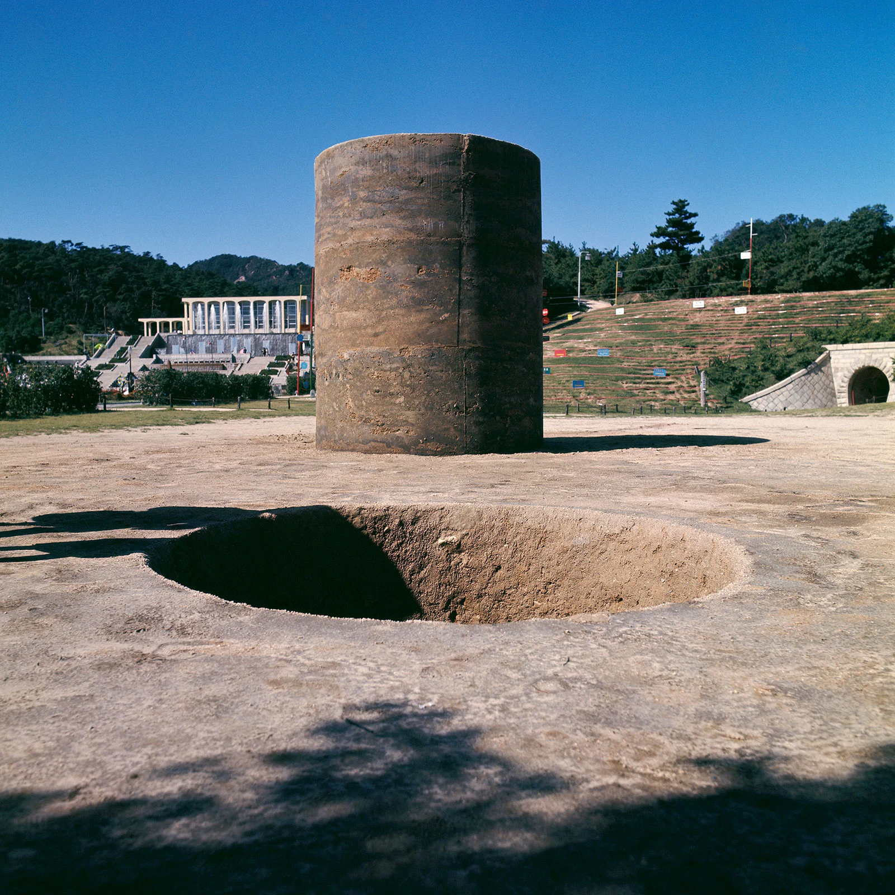
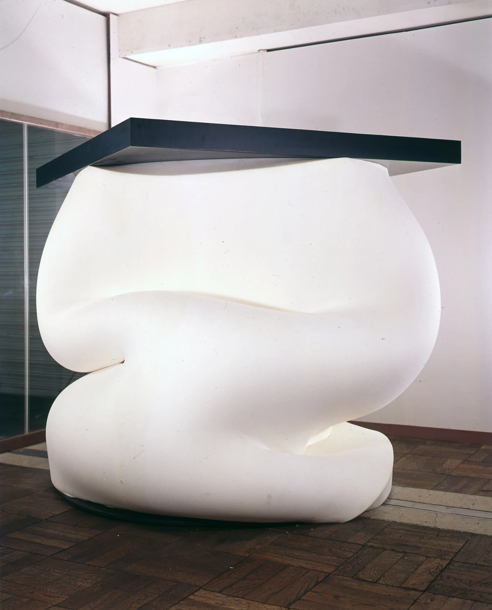
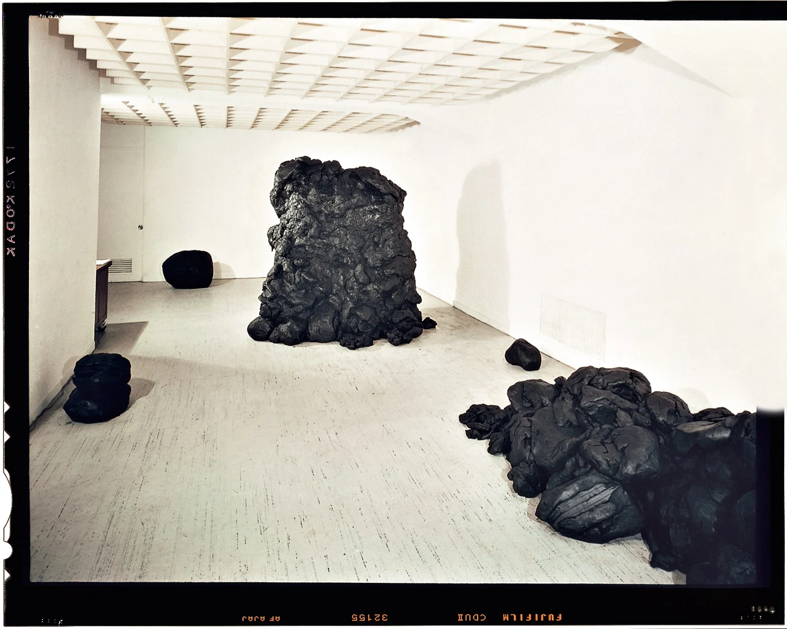
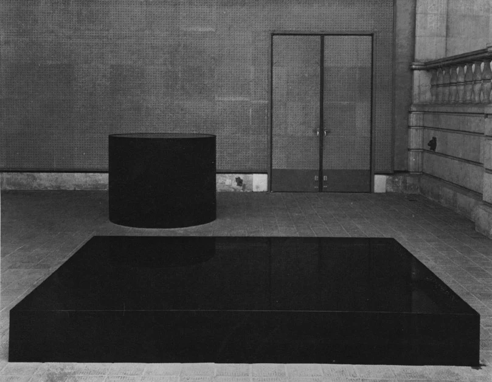

見るポイント
手前の穴の縁と、奥の土の円柱の輪郭を見比べてください。同じ大きさの形が、片方では地面に沈み、もう片方では空を背に立ち上がっています。
作品・制作の例6件を紹介しています。図版で紹介する作品は4作品。実作品図版4点、AAGA模写（Runway制作）0点。
美術の動向（単一の学校・固定団体ではない）
もの派
石、土、鉄、ガラス。見慣れた材料も、置き方が変わると、急に存在感を増します。もの派と呼ばれる作家たちは、材料を別の物の形へつくり替えるだけでなく、物どうしや、物と場所の関係を見せようとしました。
実作品を見る

画像を表示できませんでした。下の出典ページで確認できます。
関根伸夫（せきね・のぶお） / 1968年
土、セメント ／ 神戸市立須磨離宮公園、第1回神戸須磨離宮公園現代彫刻展（10月1日〜11月10日）の展示記録。会期後に撤去。
手前の穴の縁と、奥の土の円柱の輪郭を見比べてください。同じ大きさの形が、片方では地面に沈み、もう片方では空を背に立ち上がっています。
もの派の出発点として知られる作品です。制作に加わった小清水漸や、会場で見た李禹煥の証言が残っています。
作品提供・関根伸夫（Courtesy of the artist）／村井修（Osamu Murai）撮影／Wikimedia Commons、CC BY-SA 4.0。画面表示用にWebP化。
出典で作品・資料を見る ↗CC BY-SA 4.0（表示・継承 4.0 国際）
関根伸夫の作品を写した、作者提供のこの記録写真に対する公開許諾を利用しています。
図版はCC BY-SA 4.0。Wikimedia Commonsの公開記録に、権利者の許諾を確認した受付番号 2015050810021345 が記載されています。
出典先の原画像を開く ↗作品・図版の関連資料 ↗画像の利用条件 ↗全画面を保ったままWebPに変換し、大小2サイズに整えました。掲載画像にもCC BY-SA 4.0を適用します。
実作品を見る

画像を表示できませんでした。下の出典ページで確認できます。
関根伸夫（せきね・のぶお） / 1968年
スポンジ、鉄板 ／ 第5回長岡現代美術館賞展（東京・池袋西武百貨店、11月16日〜27日）での展示。1968年の展示個体の現所蔵は未確認。広島市現代美術館は1988年の再制作を所蔵。
鉄板の端はまっすぐなままです。その下では白いスポンジが押されて横にふくらみ、深い折り目ができています。鉄板の重さは、スポンジの形から読み取れます。
第5回長岡現代美術館賞展の大賞作です。
作品提供・関根伸夫（Courtesy of the artist）／Eizaburō Hara撮影／Wikimedia Commons、CC BY-SA 4.0。画面表示用にWebP化。
出典で作品・資料を見る ↗CC BY-SA 4.0（表示・継承 4.0 国際）
関根伸夫の作品を写した、作者提供のこの記録写真に対する公開許諾を利用しています。
図版はCC BY-SA 4.0。Wikimedia Commonsの公開記録に、権利者の許諾を確認した受付番号 2015050810021274 が記載されています。
出典先の原画像を開く ↗作品・図版の関連資料 ↗画像の利用条件 ↗全画面を保ったままWebPに変換し、大小2サイズに整えました。掲載画像にもCC BY-SA 4.0を適用します。
実作品を見る

画像を表示できませんでした。下の出典ページで確認できます。
関根伸夫（せきね・のぶお） / 1969年
油土（形と寸法は展示によって変わる） ／ 東京画廊での展示（4月18日〜5月2日）。当時の展示個体の現所蔵は未確認。
奥の大きな塊と、床に離れて置かれた小さな塊を見比べてください。どれも同じ油土です。輪郭の違いと間に残された白い床が、部屋の奥行きを見せます。
初出の東京画廊で中原佑介が評論を寄せ、のちに吉竹美香がもの派の研究で取り上げた作品です。
作品提供・関根伸夫（Courtesy of the artist）／関根伸夫（Nobuo Sekine）撮影／Wikimedia Commons、CC BY-SA 4.0。画面表示用にWebP化。
出典で作品・資料を見る ↗CC BY-SA 4.0（表示・継承 4.0 国際）
関根伸夫の作品を写した、作者提供のこの記録写真に対する公開許諾を利用しています。
図版はCC BY-SA 4.0。Wikimedia Commonsの公開記録に、権利者の許諾を確認した受付番号 2015050810021238 が記載されています。
出典先の原画像を開く ↗作品・図版の関連資料 ↗画像の利用条件 ↗全画面を保ったままWebPに変換し、大小2サイズに整えました。掲載画像にもCC BY-SA 4.0を適用します。
実作品を見る

画像を表示できませんでした。下の出典ページで確認できます。
関根伸夫（せきね・のぶお） / 1969年
鉄、ラッカー、水 ／ 東京都美術館、第9回現代日本美術展（5月10日〜30日）の展示記録。1969年の展示個体の現所蔵は未確認。
手前の低く広い水槽と、奥の背の高い水槽には、同じ量の水が入っています。黒く塗った内側と静かな水面が重なるため、写真では水と器の境目を見つけるのが難しくなります。
ビルバオ・グッゲンハイム美術館が、再制作した作品を通して、関根が形と量の関係をどう捉えたかを解説しています。写真は1969年の初出時のものです。
作品提供・関根伸夫（Courtesy of the artist）／撮影者不詳／Wikimedia Commons、CC BY-SA 4.0。画面表示用にWebP化。
出典で作品・資料を見る ↗CC BY-SA 4.0（表示・継承 4.0 国際）
関根伸夫の作品を写した、作者提供のこの記録写真に対する公開許諾を利用しています。
図版はCC BY-SA 4.0。Wikimedia Commonsの公開記録に、権利者の許諾を確認した受付番号 2015050810021238 が記載されています。
出典先の原画像を開く ↗作品・図版の関連資料 ↗画像の利用条件 ↗全画面を保ったままWebPに変換し、大小2サイズに整えました。掲載画像にもCC BY-SA 4.0を適用します。
野外作品・土
手前の穴の縁と、奥の土の円柱の輪郭を見比べてください。同じ大きさの形が、片方では地面に沈み、もう片方では空を背に立ち上がっています。
作品・資料の出典を見る ↗作品名（出典表記）：位相―大地
関根伸夫（せきね・のぶお） / 1968年 / 野外作品・土
後年の再制作や写真版画は、1968年の現場そのものではありません。
円筒形の穴と同じ形の土の塊を並べ、地面の中と外を見える関係にした作品です。
石・鉄・ガラス
鉄板、ガラス、石を重ねた作品です。自然の石と人工の材料が出会い、見る人もその場の関係に加わります。
作品・資料の出典を見る ↗作品名（出典表記）：関係項（Relatum、森美術館所蔵個体）
李禹煥（リ・ウファン） / 1968年／2019年 / 石・鉄・ガラス
同名連作の他の作品と混同しません。公式表記1968/2019を保持します。
スポンジ、鉄板
鉄板の端はまっすぐなままです。その下では白いスポンジが押されて横にふくらみ、深い折り目ができています。鉄板の重さは、スポンジの形から読み取れます。
作品・資料の出典を見る ↗原題：Phase—Sponge
関根伸夫（せきね・のぶお） / 1968年 / スポンジ、鉄板
油土（形と寸法は展示によって変わる）
奥の大きな塊と、床に離れて置かれた小さな塊を見比べてください。どれも同じ油土です。輪郭の違いと間に残された白い床が、部屋の奥行きを見せます。
作品・資料の出典を見る ↗原題：Phase of Nothingness—Oilclay
関根伸夫（せきね・のぶお） / 1969年 / 油土（形と寸法は展示によって変わる）
鉄、ラッカー、水
手前の低く広い水槽と、奥の背の高い水槽には、同じ量の水が入っています。黒く塗った内側と静かな水面が重なるため、写真では水と器の境目を見つけるのが難しくなります。
作品・資料の出典を見る ↗原題：Phase of Nothingness—Water
関根伸夫（せきね・のぶお） / 1969年 / 鉄、ラッカー、水
絵画・キャンバスに鉱物顔料
繰り返す筆の跡と、描かれていない場所の関係を考える絵画です。石や鉄の作品と比較し、物と空間への関心が絵にも及ぶことを見ます。
作品・資料の出典を見る ↗作品名（出典表記）：点より（From Point）
李禹煥（リ・ウファン） / 1974年 / 絵画・キャンバスに鉱物顔料
もの派全体をこの絵画だけで代表させず、作家の展開を示す比較例とします。
1968年の関根伸夫（せきね・のぶお）《位相―大地》は、円筒形の穴と、掘った土を同じ形に積んだ塊を並べました。「ない」場所と「ある」塊が、対になっています。李禹煥（リ・ウファン）は、制作に加えて文章でもこの動向を考えました。
材料自体の色や、置いた場所の光を見ます。茶色や灰色だからもの派という判断はできません。
作品を見分ける共通書体はありません。作家の文章は、作品の意味を考える別の手がかりです。
石とガラスの重さや硬さの違い、穴と土の量の関係を考えます。わずかな配置でも、大きな変化が生まれます。
作品だけを切り抜かず、床、壁、屋外の地面、人の立つ場所まで見ます。同じ材料でも置く場所で経験が変わります。
具体美術協会のような組織名とは違います。また、自然の材料を使う作品すべてがもの派ではありません。作者、時代、発表の経緯を合わせて確かめます。
いつも机にある物を別の場所へ置くと、重さや大きさの感じ方は変わるでしょうか。「物そのもの」だけでなく、その周りを見る練習になります。
選んだ作品と資料から入るための紹介です。全作家・全時期を網羅するものではありません。
作品・制作の例6件を紹介しています。図版で紹介する作品は4作品。実作品図版4点、AAGA模写（Runway制作）0点。